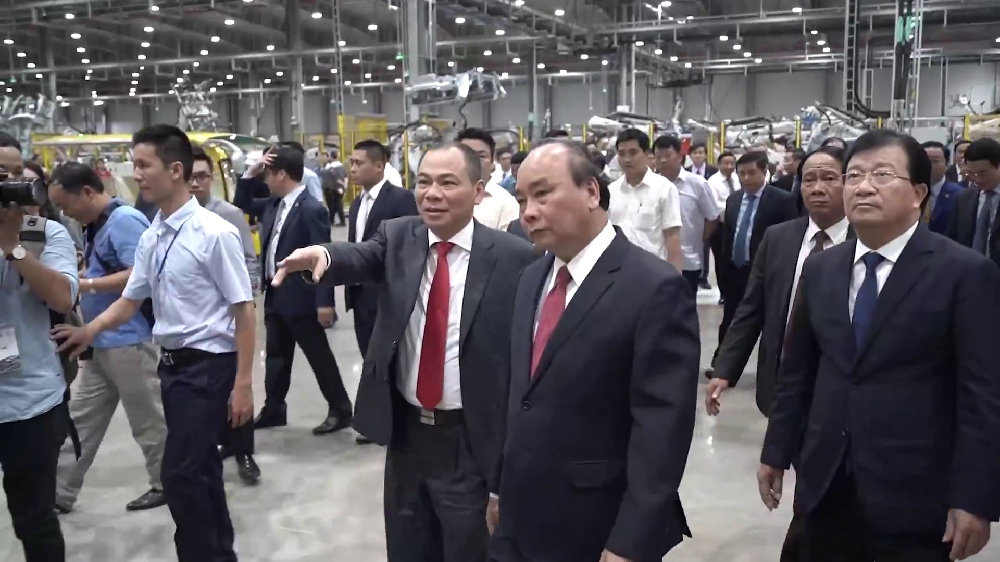

Trang trọng tâm
Phạm Nhật Vượng đã tạo ra thay đổi như thế nào?
Tác động rõ nhất nằm ở việc mở rộng giới hạn mà một doanh nghiệp tư nhân Việt Nam dám theo đuổi, từ hạ tầng đô thị đến công nghiệp xe điện.
Thúc đẩy chuẩn dịch vụ mới
Các mô hình đô thị, nghỉ dưỡng, y tế và giáo dục tích hợp góp phần làm thị trường cạnh tranh hơn về chất lượng trải nghiệm và quy mô vận hành.
Mở rộng khát vọng công nghiệp
VinFast khiến câu hỏi “Việt Nam có thể tạo ra thương hiệu ô tô của riêng mình không?” trở thành một dự án cụ thể, thay vì chỉ là ý tưởng.
Tạo hiệu ứng chuỗi cung ứng
Sản xuất xe điện kéo theo nhu cầu về kỹ sư, phần mềm, pin, tự động hóa, logistics và mạng lưới sạc.
Đưa thương hiệu Việt ra đối thoại toàn cầu
Việc bước vào các thị trường quốc tế tạo cơ hội học hỏi tiêu chuẩn cao hơn, dù kết quả dài hạn vẫn cần thời gian kiểm chứng.

Nếu không có Phạm Nhật Vượng, thế giới có thể khác đi như thế nào?
Nếu không có Phạm Nhật Vượng, kinh tế Việt Nam vẫn sẽ phát triển và quá trình đô thị hóa, dịch vụ hóa vẫn tiếp diễn. Tuy vậy, một số thay đổi có thể đến chậm hơn hoặc mang hình thức khác. Thị trường bất động sản thương mại và nghỉ dưỡng có thể thiếu một doanh nghiệp nội địa đủ quy mô để tạo các dự án tích hợp lớn. Các lĩnh vực y tế, giáo dục tư nhân và bán lẻ vẫn có nhiều nhà đầu tư khác, nhưng mức độ liên kết thành một hệ sinh thái có thể không giống hiện nay.
Khác biệt đáng chú ý nhất có lẽ nằm ở ngành ô tô. Trước VinFast, Việt Nam chủ yếu lắp ráp xe của các thương hiệu nước ngoài. Việc một doanh nghiệp trong nước xây nhà máy, phát triển thương hiệu và thử bước ra thị trường quốc tế đã tạo một biểu tượng mới cho tham vọng công nghiệp. Không có quyết định này, câu chuyện xe điện mang thương hiệu Việt có thể xuất hiện muộn hơn, quy mô nhỏ hơn hoặc do một liên minh khác thực hiện.
Tuy nhiên, không nên đồng nhất một cá nhân với toàn bộ thành quả. Hàng chục nghìn người lao động, kỹ sư, đối tác, nhà đầu tư, cơ quan quản lý và khách hàng đều góp phần tạo nên kết quả. Vì vậy, ảnh hưởng lớn nhất của ông có thể là vai trò khởi xướng, huy động nguồn lực và chấp nhận rủi ro. Thành công cuối cùng của những lựa chọn đó vẫn phụ thuộc vào chất lượng sản phẩm, hiệu quả kinh tế, trách nhiệm xã hội và khả năng phát triển bền vững trong nhiều năm.